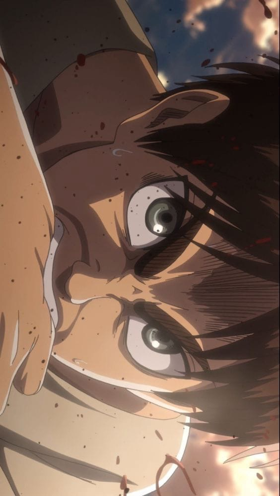
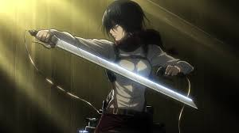
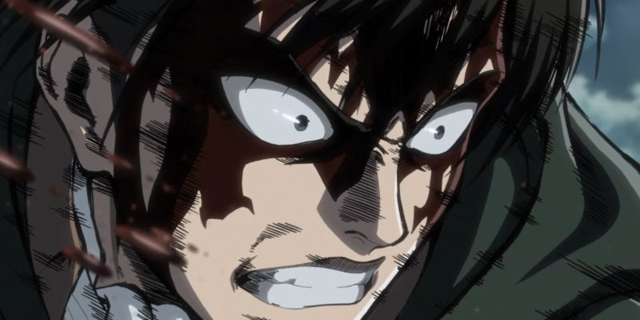
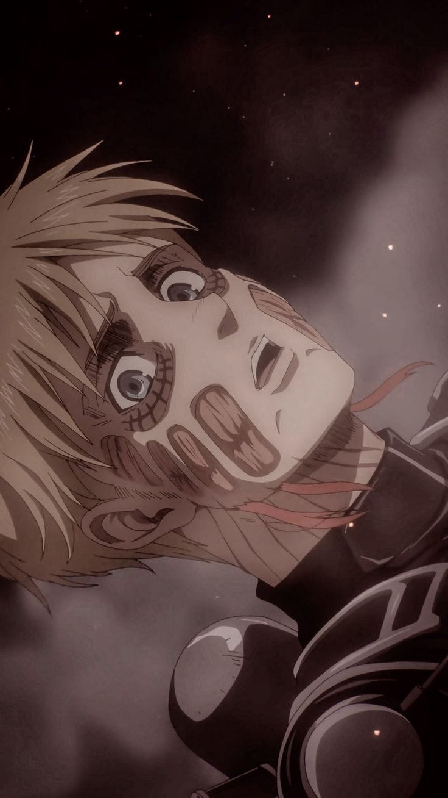

Эрен Йегер
Главный герой истории. Являлся членом Разведкорпуса. Единственный сын Гриши и Карлы Йегер, а также приёмный брат Микасы Аккерман, единокровный брат Зика Йегера, друг детства Армина Арлерта. На данный момент Эрен обладатель сил Титана—Прародителя, Титана Молота Войны и Атакующего Титана. Родился и вырос в южном районе стены Марии в Шиганшине. Во время атаки Бронированного и Колоссального титанов в 845 году Эрен своими глазами видел, как его мать съел улыбающийся титан. Это событие вызвало у Эрена искреннюю ненависть к титанам и он поклялся уничтожить их всех.
Микаса Аккерман
Приёмная сестра Эрена Йегера и лучшая подруга Армина Арлерта. Обладает выдающимися физическими способностями. После убийства её биологических родителей похитителями, она была спасена Эреном и стала жить с ним и его родителями, Гришей и Карлой до падения стены Марии.
Хотя первоначально Микаса и хотела лишь мирно жить с Эреном, она последовала за ним и вступила в 104-ый кадетский корпус, где она стала лучшей из всех выпускников. Позже она вступила в Разведкорпус, чтобы следить за Эреном и защищать его.
Леви Аккерман
Капитан собственного отряда Разведкорпуса и широко известен как «Сильнейший боец человечества» Леви — сын Кушель Аккерман, которая работала в борделе подземного города и неизвестного клиента. Несмотря на своё пристрастие к чистоте, Леви очень обособлен и необщителен. Он редко проявляет эмоции, производя на окружающих не самое лучшее впечатление. Его манера речи отличается прямолинейностью, грубостью и обилием оскорблений, а его комментарии зачастую грубые или неуместные. Он не боится провоцировать и унижать тех, кто противостоит ему или раздражает его. Его чувство юмора склонно к пошлому, оскорбительному и мрачному. Всё это делает его очень сложным в общении для большинства людей.

Армин Арлерт
Элитный солдат Разведкорпуса. Друг детства Эрена Йегера и Микасы Аккерман. В детстве Армин носил длинную голубую кофту с одной пуговицей, светлую рубашку с воротником, длинные брюки и туфли. После вступления в 104-й кадетский корпус, Армин стал носить стандартную форму кадета. После вступления в Разведкорпус, Армин стал носить стандартную форму этой организации. Под коричневым пиджаком он носит белую рубашку. Как и его товарищи, Армин поверх формы надевает длинный зелёный плащ во время экспедиций за стены. Также, Армин носит длинные коричневые сапоги почти до колен.